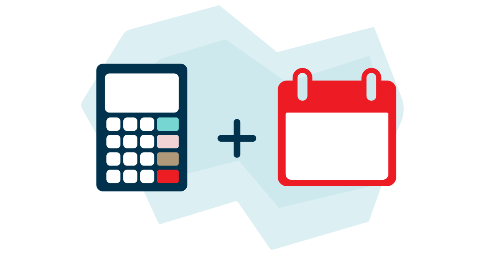
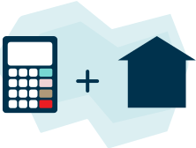
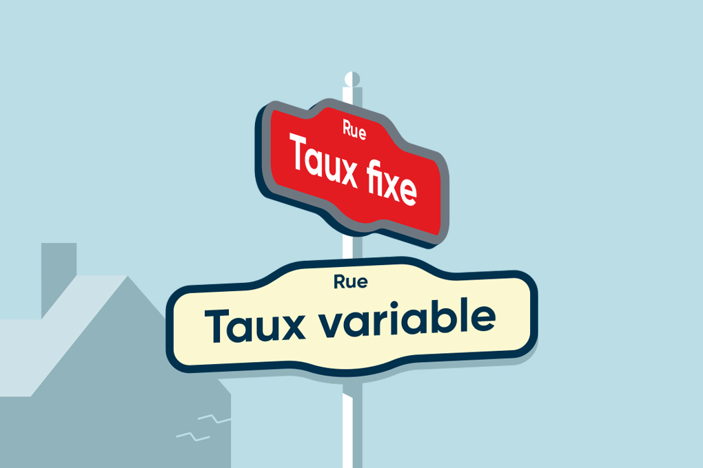

PROMOTION
Vous pourriez obtenir jusqu’à 8 750 $ de remises*
* Maximum en combinant les promotions hypothécaires, produits d’investissement et assurance prêt. Jusqu’au 3 novembre 2026.Profitez de notre service clés en main pour l’acquisition de votre première maison.
Utilisez la valeur de votre maison actuelle pour réaliser vos nouveaux projets.
Analysez vos finances et remboursez votre hypothèque plus rapidement.
Taux variable 4 sur 5 ans
Taux de base – 0,35 %
(4,14 % TAC)
Taux fixe 1 sur 3 ans
(4,69 % TAC)
Taux fixe 1 sur 4 ans
(4,83 % TAC)
Taux fixe 1 sur 5 ans
(4,88 % TAC)
Taux (%) en date du 26-08-2026
Regroupez votre hypothèque, vos nouveaux investissements et votre assurance prêt hypothécaire pour recevoir des remises additionnelles*.
* Pour une durée limitée. Consultez les conditions et restrictions de chaque promotion.
Nos équipes sont là pour répondre à toutes vos questions.
Remplissez notre formulaire pour recevoir l’appel d’une conseillère ou d’un conseiller si vous avez des questions concernant votre projet d'hypothèque.
Vous avez besoin davantage de conseils personnalisés? Sélectionnez l’une de nos expertes ou l’un de nos experts en hypothèque.
Vous pouvez aussi nous appeler dès maintenant au 1 855 755-9533.
Si vous transférez votre hypothèque à la Banque Nationale et optez pour des produits admissibles, vous pourriez bénéficier de remises en argent.
Nos conseillers hypothécaires sont là pour vous donner des conseils adaptés à vos besoins.
Remboursez votre hypothèque plus vite avec des versements flexibles ou les points de votre carte de crédit.
Estimez le montant du prêt hypothécaire que vous pourriez obtenir.

Déterminez le montant que vous pourriez rembourser chaque mois selon votre budget.

Découvrez le montant de vos versements hypothécaires à venir selon la fréquence choisie et voyez toutes les économies possibles.
Astuce! Ouvrez un CELIAPP et épargnez à l’abri de l’impôt pour votre mise de fonds ou tous autres frais reliés à l’achat d’une première propriété.
Tirez profit de la valeur de votre maison pour réaliser d’autres projets.
Transférer votre prêt hypothécaire à la Banque Nationale pourrait être payant.
Réalisez de nouveaux projets avec le montant remboursé de votre hypothèque.
Obtenez du financement ou refinancement adapté à votre situation.
Profitez de la tranquillité d’esprit pour vous et votre famille en cas d’imprévus.
Faites une offre sérieuse et protégez votre taux d’intérêt avec la préautorisation.

Faites une offre sérieuse et protégez votre taux d’intérêt avec la préautorisation.
Obtenez un rendez-vous avec l’une de nos conseillères ou l’un de nos conseillers si vous avez des questions.
Nos expertes et experts en hypothèque sont là pour vous apporter des conseils personnalisés.
* Réfère au taux standard. ** Fondé sur un prêt hypothécaire de 350 000 $ : avec un terme fermé de 5 ans à taux fixe, un amortissement de 25 ans, des frais d'administration de 5,00 $ par mois et des frais d'évaluation de 350,00 $.
*** L’écart est sujet à changement sans préavis. Les taux peuvent différer si l’amortissement est supérieur à 25 ans. Le TAC signifie le « taux annuel du coût d’emprunt » et représente le montant des intérêts et des frais exigés par la Banque, sous forme de taux sur une base annuelle.